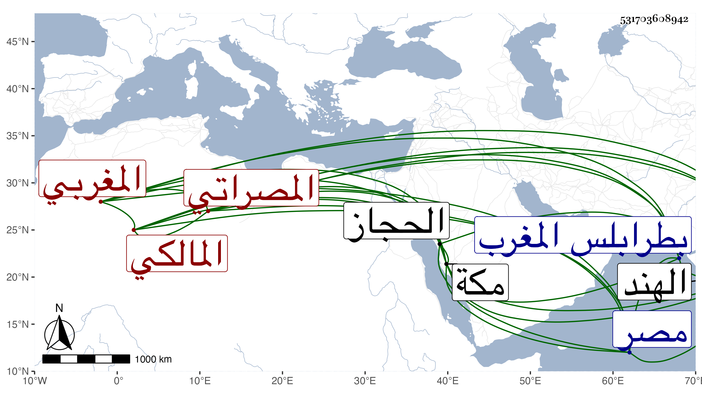

0902Sakhawi.DawLamic.ITO20230111-ara1.EIS1600.531703608942
Biography ID: 531703608942
619
مساعد بن حامد بن مساعد المصراتي المغربي المالكي أحد فضلائهم . تفقه بجماعة كأحمد القسيطي المرابط المتوفي بمكة في حدود سنة ستين وبأبي القسم الهزبري المتوفي بطرابلس المغرب في هذا الأوان أيضا وله اشتغال بالعربية والمنطق وبعض الأصول وتعانى التجارة وتردد إلى الحجاز مرارا وحج وجاور وكانت أغلب إقامته بمصر رأيته بها . ومات بالهند بعيد السبعين تقريبا .
